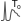
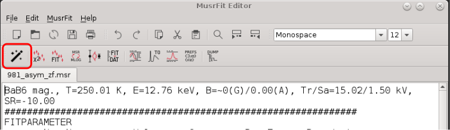
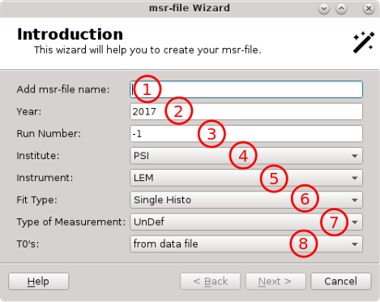
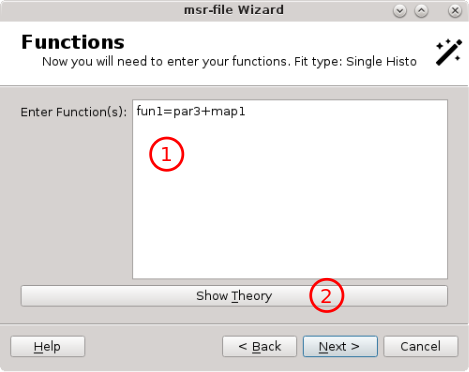
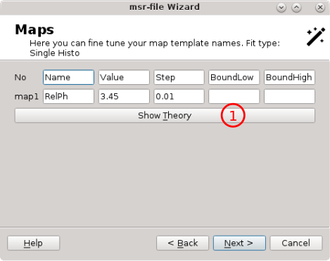
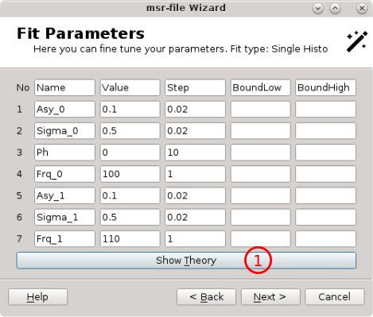
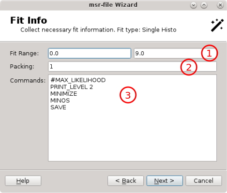
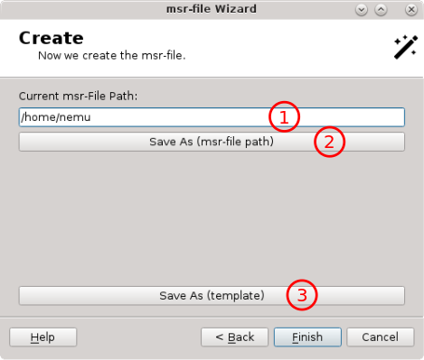
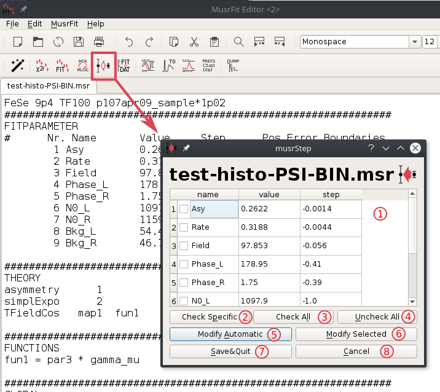

musredit / (musrgui)
1 Introduction
musredit and musrgui are editors which also provide a graphical user interface to the programs contained in the musrfit suite and are intended to help the user handle musrfit msr files. They are implemented in C++ and use the Qt framework. Principally, musrgui and musredit are doing the same, but are based on different Qt versions. musrgui is based on Qt 3.x and will only be maintained on bug-fixing level since the Qt 3.x licensing is less straight forward than the Qt 4.x one. musredit is based on Qt 4.6 or Qt 5.6 (or above). The Qt 5.6 version of musredit will be actively developed, whereas the Qt 4.x version will only get bug fixing and eventually will be droped.On this documentation page only the features related to
musrfit are described—the basic editor functions which should be self-explanatory are not.Before going on using
musrgui / musredit it is strongly recommended to read the manual of musrfit first!
2 Available Executables, Configuration Files and their Basic Usage
2.1 musredit / (musrgui)
musredit / musrgui are the editor executables. If called from within a shell they accept a few optional parameters: - <msr_files>
- file names of the msr files that should be opened in separate editor tabs on startup of
musrgui/musredit. - --help
- displays a small help notice in the shell explaining the basic usage of the program
- --version
- prints the version number of
musrgui/musredit
2.2 musredit_startup.xml / musrgui_startup.xml
musredit_startup.xml / musrgui_startup.xml are configuration files located at the musredit / musrgui binary path. It is also possible to have another version of this file in the working directory which then will be used!
In this file the following XML tags are allowed to define settings and might proof useful for all users of musredit / musrgui: - <general></general>
- set the default paths to executables and files in this environment
- <exec_path>PATH_TO_EXEC</exec_path>
- set the path PATH_TO_EXEC where the executables
musrfit,musrview,musrt0, etc. can be found (inside the <general> environment) - <default_save_path>SAV_PATH</default_save_path>
- specify the path SAV_PATH where
musrgui/musreditpoint by default when opening and saving msr files (inside the <general> environment). Default is the current directory. - <msr_default_file_path>MSR_DEF_PATH</msr_default_file_path>
- set the path MSR_DEF_PATH where the default msr files provided by
musrguiare stored (inside the <general> environment) - <timeout>3600</timeout>
- timeout in seconds after which musrview canvas will automatically quit. A value of 0 or a negative number will keep the musrview canvas open without self-determination.
- <keep_minuit2_output>y/n</keep_minuit2_output>
- flag indicating if the
MINUIT2output shall be kept per msr-file ('y') or only for the current msr-file ('n'). - <dump_ascii>y/n</dump_ascii>
- flag indicating if musrfit shall dump fit data into ascii format. See help of musrfit.
- <dump_root>y/n</dump_root>
- flag indicating if musrfit shall dump fit data into root format. See help of musrfit.
- <title_from_data_file>y/n</title_from_data_file>
- specify if
musrfitshould be called with the -t option by default (inside the <general> environment) - <chisq_pre_run_block>y/n</chisq_pre_run_block>
- flag indicating if per-run chisq shall be written into the msr-output-file. $ <estimate_n0>y/n</estimate_n0> flag indicating if for a single histogram fit N0 shall be estimated before the fit procedure starts.
- <musrview_show_fourier>y/n</musrview_show_fourier>
- flag indicating if musrview will directly present the Fourier transform rather than the time domain data.
- <musrview_show_avg>y/n</musrview_show_avg>
- flag indicating if musrview will directly present averaged data, typically used for Fourier power spectra.
- <enable_musrt0>y/n</enable_musrt0>
- specify if
musrt0can be called from withinmusrgui/musredit(inside the <general> environment)
- <font_settings></font_settings>
- set the default font in this environment
- <font_name>FONT</font_name>
- specify the name of the font FONT to be used by default in
musrgui/musredit(inside the <font_settings> environment) - <font_size>N</font_size>
- specify the size N of the font to be used by default in
musrgui/musredit(inside the <font_settings> environment)
- <msr_file_defaults></msr_file_defaults>
- put the default settings for newly created msr files in this environment
- <beamline>BL</beamline>
- set the name of the muon beamline BL here (inside a <msr_file_defaults>-environment)
- <institute>INST</institute>
- set the name of the facility INST where the beamline BL is located. Valid settings are PSI, RAL, JPARC, and TRIUMF (inside a <msr_file_defaults> environment)
- <file_format>FF</file_format>
- specify the default data file format FF here. Valid formats are NEXUS, ROOT-NPP, ROOT-PPC, PSI-BIN, PSI-MDU, MDU-ASCII, WKM, MUD, ASCII, and DB (inside a <msr_file_defaults> environment)
- <lifetime_correction>y/n</lifetime_correction>
- choose if by default the lifetimecorrection option should be set (inside a <msr_file_defaults> environment)
- <msr2data_defaults></msr2data_defaults>
- define the default options for calling
msr2datain this environment; the options set here are ticked by default in the graphical interface ofmusrgui/musredit.- <chain_fit>y/n</chain_fit>
- (un)set the chain fit (!) option (inside a <msr2data_defaults> environment)
- <write_data_header>y/n</write_data_header>
- (un)set the noheader option (inside a <msr2data_defaults> environment)
- <ignore_data_header_info>y/n</ignore_data_header_info>
- (un)set the nosummary option (inside a <msr2data_defaults> environment)
- <keep_minuit2_output>y/n</keep_minuit2_output>
- (un)set the -k option (inside a <msr2data_defaults> environment)
- <write_column_data>y/n</write_column_data>
- (un)set the data option (inside a <msr2data_defaults> environment)
- <create_msr_file_only>y/n</create_msr_file_only>
- (un)set the msr option in case a template run is specified (inside a <msr2data_defaults> environment)
- <fit_only>y/n</fit_only>
- (un)set the fit option in case no template run is specified (inside a <msr2data_defaults> environment)
- <global>y/n</global>
- (un)set the global option (inside a <msr2data_defaults> environment)
- <global_plus>y/n</global_plus>
- (un)set the global+ option (inside a <msr2data_defaults> environment)
- <recreate_data_file>y/n</recreate_data_file>
- (un)set the
musrgui/musreditoption for recreating the output file (inside a <msr2data_defaults> environment) - <open_file_after_fitting>y/n</open_file_after_fitting>
- (un)set the
musrgui/musreditoption for opening msr files after fitting (inside a <msr2data_defaults> environment)
musrgui / musredit: - <help_section></help_section>
- define various help messages in this environment
- <help_main>HELP TEXT</help_main>
- set the main help message HELP TEXT here (inside a <help_section> environment)
- <func_pixmap_path>PIX_PATH</func_pixmap_path>
- set the path PIX_PATH to
 pixmaps visualizing the various supported theory functions
pixmaps visualizing the various supported theory functions
- <theory_functions></theory_functions>
- define the functions for a msr file's THEORY block according to the correct syntax in this environment
- <func></func>
- specify a function here (inside a <theory_functions> environment)
- <name>NAME</name>
- the NAME of the function in the msr file (inside a <func> environment)
- <comment>COMMENT</comment>
- description of the used parameters (inside a <func> environment)
- <label>LABEL</label>
- LABEL of the function in the
musrgui/musreditmenu (inside a <func> environment) - <pixmap>PIXMAP</pixmap>
- picture used to describe the function and stored in the PIX_PATH (inside a <func> environment)
- <params>N</params>
- number of parameters N used by the function (inside a <func> environment)
musrgui_startup.xml looks like:
<?xml version="1.0" encoding="UTF-8"?>
<musrgui_startup xmlns="https://intranet.psi.ch/MUSR/MusrGui">
<general>
<exec_path>/usr/local/bin</exec_path>
<default_save_path>./</default_save_path>
<msr_default_file_path>/home/user/analysis/musrfit/src/musrgui</msr_default_file_path>
</general>
<font_settings>
<font_name>Courier New</font_name>
<font_size>10</font_size>
</font_settings>
<msr_file_defaults>
<beamline>mue4</beamline>
<institute>psi</institute>
<file_format>root-npp</file_format>
<lifetime_correction>y</lifetime_correction>
</msr_file_defaults>
<msr2data_defaults>
<chain_fit>y</chain_fit>
<write_data_header>y</write_data_header>
<ignore_data_header_info>n</ignore_data_header_info>
<keep_minuit2_output>n</keep_minuit2_output>
<write_column_data>n</write_column_data>
<recreate_data_file>n</recreate_data_file>
<open_file_after_fitting>y</open_file_after_fitting>
<create_msr_file_only>n</create_msr_file_only>
<fit_only>n</fit_only>
<global>n</global>
<global_plus>n</global_plus>
</msr2data_defaults>
<help_section>
<help_main>
For a detailed description of the aim and structure of a msr file see http://lmu.web.psi.ch/facilities/software/musrfit/user/MUSR/MusrFit.html
</help_main>
</help_section>
<func_pixmap_path>/home/user/analysis/musrfit/src/musrgui/latex_images</func_pixmap_path>
<theory_functions>
<func>
<name>asymmetry</name>
<comment></comment>
<label>Asymmetry</label>
<pixmap>asymmetry.png</pixmap>
<params>1</params>
</func>
<func>
<name>simplExpo</name>
<comment>(rate)</comment>
<label>simple Exp</label>
<pixmap>simpleExp.png</pixmap>
<params>1</params>
</func>
<func>
<name>simplGss</name>
<comment>(rate)</comment>
<label>simple Gauss</label>
<pixmap>simpleGauss.png</pixmap>
<params>1</params>
</func>
</theory_function>
</musrgui_startup>
3 musrfit Features
The features of musrfit which can be accessed by the graphical front ends musredit / (musrgui) are described in the following. All functions can either be called by choosing them from the MusrFit menu, by clicking the respective button in the MusrFit bar, or by using a keyboard shortcut.
musrWiz is a helper programs which allows to create a msr-file from scratch without too much a priori knowledge. For details see musrWiz.
Calculate Chisq (Alt+c): musrfit <msr_file> --chisq-onlyis called for the <msr_file> selected in the editor. For further information refer to the manual of
musrfit.
Fit (Alt+f): musrfit <msr_file> [optional parameters]is called for the <msr_file> selected in the editor. The optional parameters may be chosen under Preferences. For further information refer to the manual of
musrfit.
Swap Msr ↔ Mlog (Alt+s): Swap the msr and mlog files. E.g., for a file called 8472_zf.msr, this is copied to 8472_zf.mlog and vice versa.
musrStep
Msr2data (Alt+m): Opens a graphical interface to the msr2data program described in detail in its own manual.
View (Alt+v): musrview <msr_file>is called for the <msr_file> selected in the editor. For further information refer to the manual of
musrfit.
 T0 (Alt+t): musrt0 <msr_file>is called for the <msr_file> selected in the editor. For further information refer to the manual of
musrfit.
Raw Fourier: musrFT <with-many-options> is called. For a proper documentation of it, check the manual of musrFT.
Preferences (Alt+p): Opens a window in which the optional parameters that should be passed to musrfit can be chosen. These options are --keep-mn2-output, --dump ascii, --dump root, and --title-from-data-file. For further information refer to the manual of musrfit. Additionally, the access to musrt0 can be enabled temporarily.
 Dump Header: Opens a file dialog which allows to select a μSR data file. When this file can be read, the run header info is dumped into a dialog window. Essentially this calls
Dump Header: Opens a file dialog which allows to select a μSR data file. When this file can be read, the run header info is dumped into a dialog window. Essentially this calls dump_header internally.
4 musrWiz
musrWiz is a helper program which allows to easily create the necessary msr-file needed as the input for musrfit. musrWiz is still in it's early stage; not all options are already implemented and here and there you will likely find some bugs. From musredit it can be accessed via the MusrFit menu or the wand  The musrWiz GUI is organized in a couple of different dialogues which some information needs to be provided by the user. In the following these different dialogues will be discussed briefly.4.1 musrWiz - Introduction
The introduction dialogue - an explicit msr-file name can be provided here. More often the msr-file name is generated out of the run number.
- year of the run data.
- run number. If no explicit msr-file is provided, the run number together with fit type and type of measurement will be used to generate the msr-file name.
- from the pull down menu the institute (for which a necessary xml-file is provided) has to be choosen.
- from the pull down menu the the instrument can be chosen.
- the fit type has to be chosen. Possible fit types are:
Single Histo/Single Histo RRF/Asymmetry/Asymmetry RRF/Mu Minus/None muSR - type of measurement is essentially needed for the grouping of the detectors. Possible are:
ZFfor zero field measurements /TFfor transverse field measurements /LFfor longitudinal field measurements. Depending on the choice and instrument some additional question might be asked, e.g. which magnet has been used. - T0's: this last menu defines from where to get the t0's. The options are: '
from data file', i.e. the t0 are assumed to be correctly set in the provided data file 'call musrT0', i.e. after the msr-file is generated, musrt0 will be called which allows the user to find the proper t0 from the prompt peak 'enter here' will provide a pop-up menu where the t0 parameter can be given explicitly.
Next> ' will lead you the the theory dialogue.
4.2 musrWiz - Theory
The theory dialogue is used to define the fitting function. There are two ways of using it:- choose a template theory function. This option has the advantage that the next steps will be very easy because within the template almost everything is already pre-defined. The disadvantage is that you are not free in setting up your theory function as you would like to have.
- freely write your theory function. The advantage here is that you can customize your theory function as you would like to have it. This will come at the cost that you also will need to define maps, functions, etc. yourself. The good thing though is that at the very end you can save this as a template for future re-use.
- This is a text edit field were you can enter the theory fit function as you would like to have it.
- The '
Clear All' button will clear whatever you entered in the text field above - This pull-down menu allows to select a theory function which will be added to the text field above by pressing the '
Add' button. Pre defined theory function starting with a 'T' are templates rather than only theory function strings. - The '
Add' button is used to add the chosen theory function / template from the pull-down menu to its left. - The '
Check' button is used to make a syntactical check of whatever is written in the text edit field.
T: 1 [exp x cos](TF) ' from the pull-down menu and than press the ' Add ' button. You will see that the theory fit function will be entered in the text edit field. After this just press the ' Next> ' button which will bring you to Functions dialogue.
4.3 musrWiz - Functions
In theFunctions dialogue all the necessary functions can be entered. A function operates only on fitting parameters. This is different to the theory function which operates on the fitting parameters and the time.
The dialogue looks like this

- a text edit field in which the various needed functions can be entered. In case a template theory is used, the appropriate function should be shown here and no editing will be needed here.
- pressing '
Show Theory' button will pop-up a little window showing the previously entered theory function. This is handy when defining its own theory, i.e. not working with a template.
4.4 musrWiz - Maps
 The map dialogue will list the maps previously used in the theory and functions blocks/dialogues before. Again, if a template is used, nothing needs to be entered here.- The '
Show Theory' button allows to show the currently defined theory and the functions.
4.5 musrWiz - Fit Parameters
- The '
Show Theory' button allows to show the currently defined theory and the functions.
4.6 musrWiz - Fit Info
- allows to define the time fit range (start time, end time).
- packing defines how many bins of the original data shall be combined (added, also called re-binning).
- In this text field to fitting commands are given (see the
MINUITandmusrfitmanual for details).
4.7 musrWiz - Create
- shows the path where the msr-file will be saved. If you would like to save it somewhere else press the '
Save As (msr-file path)button. - pressing this button will allow you to find the path where to save the msr-file.
- pressing this button will save to current configuration as a template for future re-use.
5 musrStep
musrStep is a little helper program which allows to reset the initial step size. This sometimes comes very handy if working on an instrument with many detectors after a fit slightly went wrong leaving you with a far too small initial step size for further iterations. To edit all the steps individually is tedious and error prone. Here musrStep can help.  When invoking musrStep the above dialogue will popup- shows the relevant parts of the
FITPARAMETERblock. The only editable column isstep. - '
Check Specific' will popup a dialogue where a template string can be entered, e.g.Asym. As a result all fit parameters containing the template string will be selected. - '
Check All' will select all fit parameters. - '
Uncheck All' will unselect all fir parameters. - '
Modify Automatic' will change all the step values automatically. It basically sets all the step sizes to 1% of the corresponding fit parameter value, except the phases where the step will be set to a value of 5 degrees. - '
Modify Selected' will start the dialogue shown beneath. Follow the description there. - '
Save&Quit' will save the current step values, close the dialogue and reload the modified msr-file. - '
Cancel' will cancel the musrStep dialogue without modifying anything.
Modify Selected ' the above dialogue will be presented. It allows to manipulate all selected fir parameter step values according to the following rules - '
Scale by Factor' will scale the step value by the factor given in the field (2). If the 'Absolute Value' check box is selected, rather than scaling the factor value will be used to modify the step value. - Scaling factor or absolute value to modify the step values of the selected fit parameters.
- checking the '
Absolute Value' check box will change the meaning fromScale by FactortoCopy Factor Value. - '
Scale Automatically' will modify the step values of the selected fit parameters according to the rules described before. - '
Cancel' will cancel the dialogue.
6 Bugtracking
For reporting bugs or requesting new features and improvements please use the Bitbucket Tracker, PSI Tracker (PSI account needed) or send an e-mail to A. Suter.

| I | Attachment | Action | Size | Date | Who | Comment |
|---|---|---|---|---|---|---|
| |
musrgui-editor-v0.png | manage | 37 K | 10 Apr 2009 - 14:53 | UnknownUser | musrgui options available upon right clicking a open msr-file |
Ideas, requests, problems regarding PSI Wiki? Send feedback

{kind=link}
{kind=link}